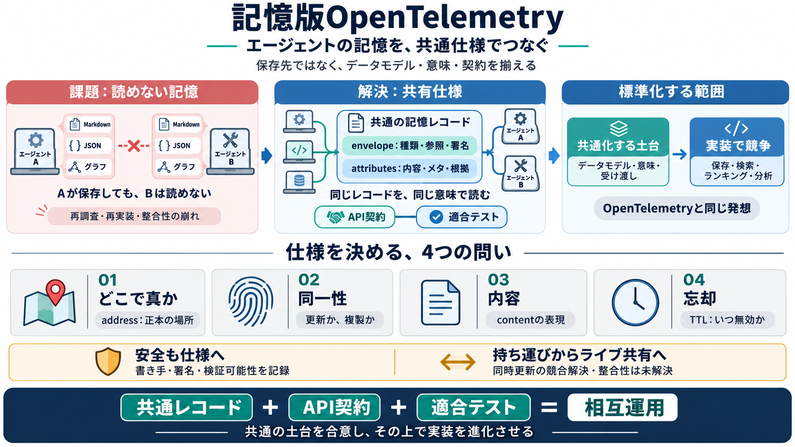

OpenTelemetry vs OpenTracing: Migration & Comparison | Uptrace
OpenTelemetry and OpenTracing share a common ancestry. OpenTelemetry is the result of a 2019 merger between OpenTracing …

エージェントの記憶（agent memory）がツールごとに分断される限界を、共通のデータモデル／契約で突破する。
Aが保存した記憶を、Bが読めない。結果として同じ学習や調査が再実装され、CIや編集でも整合が崩れる。
AGENTS.md / /memories / リポジトリ事実 / ナレッジグラフ
JSON・JSONL・グラフ・専用サーバ・専用ルール
2019年にOpenTracingとOpenCensusが統合し、共通化したのは“到達前”の土台（データモデル・セマンティクス・プロトコル）だった。
共有仕様は、記憶を“レコード”として捉える。JSONでもMarkdownでも表現できる構造（envelope / attributes）を想定する。
共通ラッパ：種類・参照・署名など
中身：内容・メタ・根拠
読み書きの合意（いつ・どう渡すか）
仕様化の要は4点だ。どこで真か／同一性／内容／有効期限が曖昧だと、互換性テストが成立しない。
共通仕様だけでは不十分。複数実装が同じ意味で動くかを確かめる“適合テスト”が必要になる。
同じレコードを読んだとき同じ理解に寄る
ランキング／検索／分析は後段で自由に最適化
既存の提案は“エクスポート”中心が多い。だが開発現場では複数ツールが同時に読み書きする“ライブ・アドレシング”が重要で、未解決が残る。
他社へ持ち運び（export）
同時更新（live addressing）
競合解決・整合戦略が要る
共有メモリはプロンプトインジェクションの温床にもなり得る。だから“誰が書いたか”や検証可能性の記録を仕様に織り込む必要がある。
書き手（written_by）や署名の扱い
読み手が信頼度・解釈条件を調整する
LoreKitのような案は“ひとつの一案”。本質は、コミュニティが共通仕様に合意していくタイミングを作ることだ。
強みは混沌を“相互運用の欠如による構造的非効率”として捉え、4点の設計問いで議論を前に進める点。
共通化すべき土台を“到達前”に置く
競合解決・セキュリティ詳細・適合テストの網羅性は追加が必要
agent memoryの相互運用には、記憶レコードの“真である場所（address）／同一性／内容／有効期限”を共通化し、互換性テストまで設計する必要がある。
データモデル＋意味＋契約
安全（誰が書いたか）
ライブ共有（未解決）
OpenTelemetry and OpenTracing share a common ancestry. OpenTelemetry is the result of a 2019 merger between OpenTracing …
OpenTelemetry is a project which emerged from merging of OpenCensus and OpenTracing in 2019. Although OpenCensus and Ope…
### OpenTelemetry In May 2019, the Cloud Native Computing Foundation announced the merging of the OpenTracing and OpenC…
In 2019, the CNCF announced that OpenTracing and OpenCensus would merge into OpenTelemetry to eliminate fragmentation in…
Microsoft is an active member of OpenTelemetry community. We joined OpenCensus with the idea of built-in telemetry in mi…